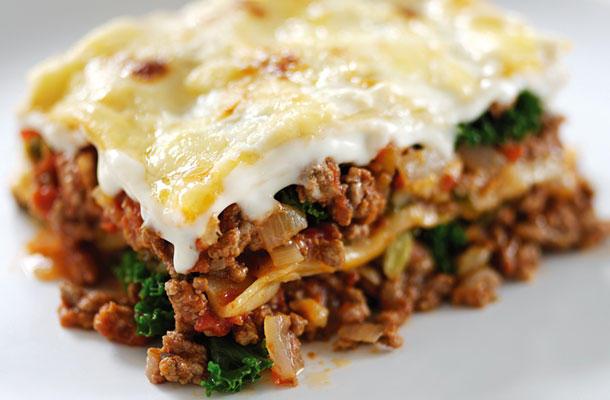
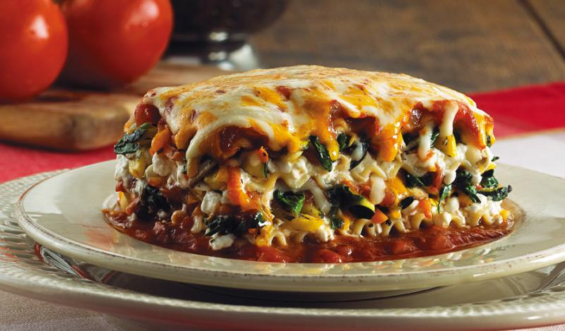
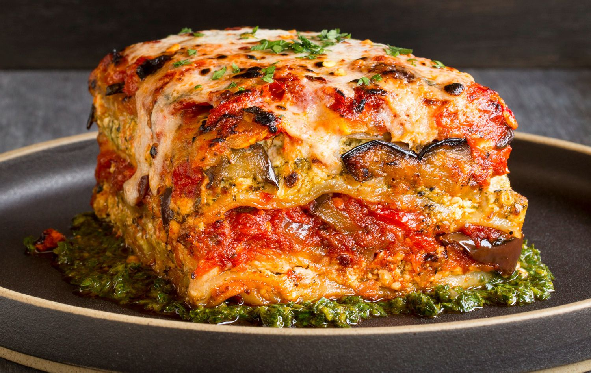

Difficult Diners Mains
This Month is Italian Month, and we have chosen the family favourite; lasagne.
Lasagne
Lasagne is an all time family favourite, we are here to cater to the needs of every mouth in your family.



Lasagne Vegetarian
Ingredients:
- 3 Red Peppers
- 2 aubergines
- 8 tbsp olive oil
- 1/2 tomato sauce
- 300g fresh lasagne sheets
- 1/2 white sauce
- 125g ball mozzarella
- cherry tomatoes halved
Recipe:
- Heat oven to 200C/fan 180C/gas 6. Deseed the peppers, halve, then cut into large chunks. Trim ends off aubergines, then cut into slices about ½cm thick. Lightly grease 2 large baking trays, then place peppers and aubergines on top. Toss with the olive oil, season well, then roast for 25 mins until lightly browned.
- Reduce oven to 180C/fan 160C/gas 4. Lightly oil an ovenproof serving dish (30 x 20cm). Arrange a layer of the vegetables on the bottom, then pour over a third of the tomato sauce. Top with a layer of lasagne, then drizzle over a quarter of the white sauce. Repeat until you have 3 layers of pasta.
- To finish, spoon remaining white sauce over the pasta, making sure the whole surface is covered. Scatter mozzarella over the top with the tomatoes. Bake for 45 mins until bubbling and golden.
 The whole family can enjoy lasagne. Make enough to last two meals!
The whole family can enjoy lasagne. Make enough to last two meals!
Lasagne Vegan
Ingredients:
- 1 tbsp olive oil
- 1 onion
- 1 carrot
- 1 celery
- 1 garlic clove
- 2 x 400g cans lentils
- 400g can chopped tomato
- 1tsp mushroom ketchup
- 1 tsp chopped oregano
- 1 tsp vegetable stock powder
- 2 cauliflower
- 2 tbsp undweetened soya milk
- 9 dried egg-free lasagne sheets
Recipe:
- Heat the oil in a pan, add the onion, carrot and celery, and gently cook for 10-15 mins until soft. Add the garlic, cook for a few mins, then stir in the lentils and cornflour.
- Add the tomatoes plus a canful of water, the mushroom, ketchup, oregano, stock powder and some seasoning. Simmer for 15 mins, stirring occasionally.
- Meanwhile, cook the cauliflower in a pan of boiling water for 10 mins or until tender. Drain, then purée with the soya milk using a hand blender or food processor. Season well and add the nutmeg.
- Heat oven to 180C/160C fan/gas 4. Spread a third of the lentil mixture over the base of a ceramic baking dish, about 20 x 30cm. Cover with a single layer of lasagne, snapping the sheets to fit. Add another third of the lentil mixture, then spread a third of the cauliflower purée on top, followed by a layer of pasta. Top with the last third of lentils and lasagna, followed by the remaining purée.
- Cover loosely with foil and bake for 35-45 mins, removing the foil for the final 10 mins of cooking.
 Make fancy individual ones for a dinner party or a big dish to feed the whole family.
Traditional Meat Lasagne
Add meat:
Make the much loved, and simple lasagne by simply just adding mince meat to the recipes. Approxiamately 500g of good quality mince, fried off with plenty of garlic and oregano